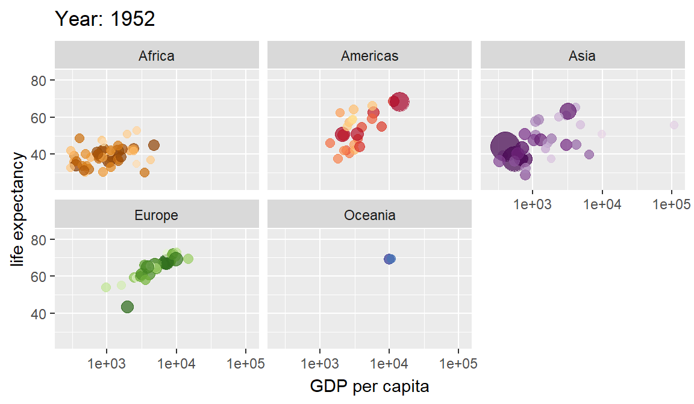

Make ggplot interactive
Horizontal versions of ggplot2 geoms
Extra coordinate systems, geoms & stats
Accelarating ggplot2
Repel overlapping text labels
Plot graph-like data structures
Miscellaneous extensions to ggplot2
Network visualizations in ggplot2
Marginal density plots or histograms
Create easy animations with ggplot2
Interactive ROC plots
ggplot themes and scales
Extensions for radiation spectra
Geoms to plot networks with ggplot2
ggplot2 tech themes, scales, and geoms
radar charts with ggplot2
Time series visualisations
A phylogenetic tree viewer
Seasonal adjustment on the fly
https://github.com/thomasp85/gganimate
A Grammar of Animated Graphics.
library(gganimate)## Loading required package: ggplot2library(gapminder)
ggplot(gapminder, aes(gdpPercap, lifeExp, size = pop, colour = country)) +
geom_point(alpha = 0.7, show.legend = FALSE) +
scale_colour_manual(values = country_colors) +
scale_size(range = c(2, 12)) +
scale_x_log10() +
facet_wrap(~continent) +
# Here comes the gganimate specific bits
labs(title = 'Year: {frame_time}', x = 'GDP per capita', y = 'life expectancy') +
transition_time(year) +
ease_aes('linear')